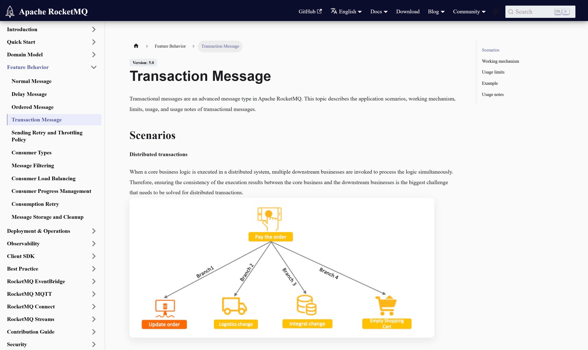
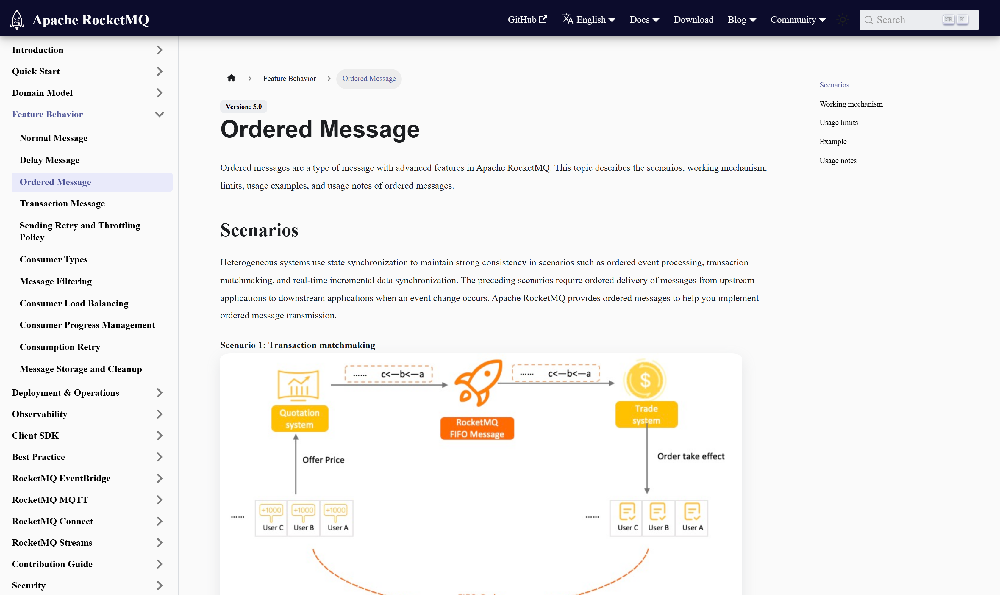
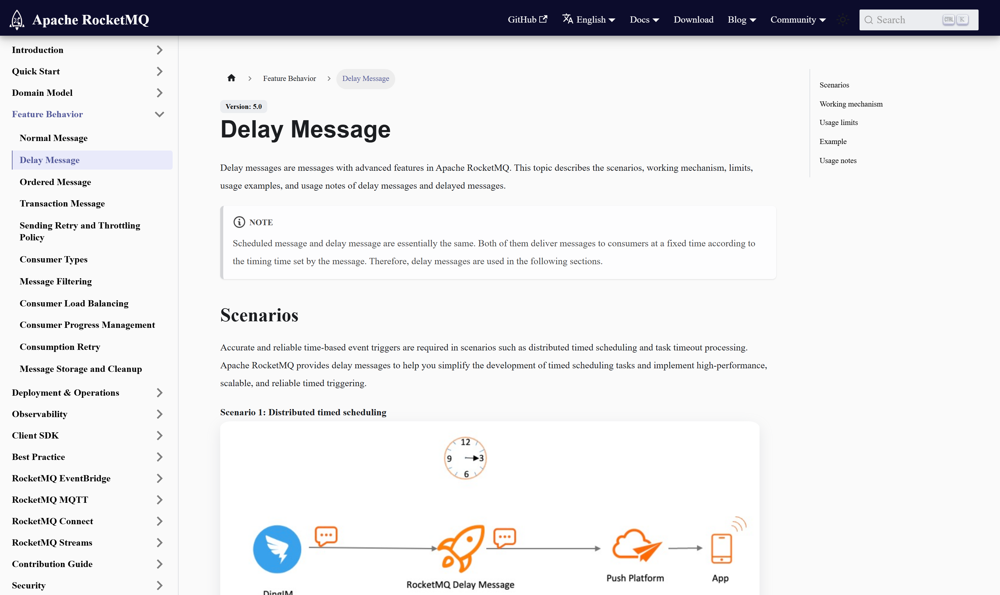

OSS PROJECT INTRO · APACHE ROCKETMQ 系列第 4 期：实战订单一致性
上一期我们把概念地图画完了，这期继续——把三件武器用进"订单一致性"这个最典型的场景：事务消息解决"订单落库成功、下游消息却发不出去"的半程失败，半消息先落、本地事务再跑、结果未知时 Broker 主动回查；顺序消息解决"创建、支付、发货状态机被乱序执行"，同一订单的消息锁进同一队列串行消费；定时消息解决"三十分钟未支付自动关单"，秒级定时原生支持。最后把事务消息与经典的本地事务表方案放上天平对比。本期全部用法逐字对照官方文档，结束你能独立设计一条敢上生产的订单消息链路。
把电商下单的最小链路摆上桌：用户提交订单，订单服务落库，然后要通知下游——扣库存、发积分、推送履约；支付成功后状态推进；三十分钟未支付要自动关单。三道坎都在这里：
这三道坎正好对应本期三件武器。先立一个总原则：分布式一致性没有银弹，事务消息只保证"消息与本地事务的最终一致"，官方文档明确说它不保证消费端的结果一致——消费端该幂等还得幂等，第 3 期的课没有白上。
官方文档把这个机制讲成三个回合：第一回合，生产者发半消息，Broker 存下但标记为"未就绪"，对消费者完全不可见，然后回 ACK——此刻订单服务可以放心执行本地事务，因为消息已经"落袋"；第二回合，本地事务执行完，提交则消息转为可消费，回滚则半消息删除；第三回合是精髓：如果二次确认丢了、或者生产者在事务执行中挂了，Broker 等一会儿后主动回查生产者——回查器拿着消息上的业务键（比如订单号）去查本地事务的真实状态，答提交、答回滚、答"还在进行中请再等等"都行。始终确认不了的消息，官方口径是默认回滚——宁可少发，不可错发。

官方使用步骤五步走（5.x 新客户端 API）：建 Transaction 类型 Topic（普通主题会直接拒绝事务消息，这是新手第一坑）；生产者构建器上挂回查器；beginTransaction 开事务；发送半消息并带上业务键属性；执行本地事务后二阶段提交或回滚。代码骨架如下：
// 官方文档 Transaction Message 示例骨架（5.x 客户端）
Producer producer = provider.newProducerBuilder()
.setClientConfiguration(config)
.setTransactionChecker(tx -> { // 回查器：查本地事务结果
if (orderDao.paid(tx.getProperty("OrderId"))) {
return TransactionResolution.COMMIT;
}
return TransactionResolution.UNKNOWN; // 查不到别乱答，交给下轮回查
}).build();
Transaction tx = producer.beginTransaction();
Message msg = provider.newMessageBuilder()
.setTopic("order_tx_topic")
.addProperty("OrderId", orderId) // 关联本地事务的业务键
.setBody(orderBody).build();
producer.send(msg, tx); // 半消息发送
orderDao.create(order); // 本地事务：落库
tx.commit(); // 二阶段：提交或 rollback回查器有三个实务要点：回查必须幂等——同一封半消息可能被查多次，实现要经得起重复；查不到别急着答回滚——可能是库延迟，返回 Unknown 等下一轮，官方警告答错没有后悔药；控制进行中事务的判定——长时间挂起的事务要能被识别，别让回查轮空轮个没完，官方明确提醒大量事务回查会拖累系统性能。
4.x 经典 API 对照：TransactionMQProducer 加 executeLocalTransaction / checkLocalTransaction 两个回调，机制相同、入口不同。存量系统见到它们不要陌生——半消息加回查这套戏，两代客户端唱的是同一本。

顺序消息的保序哲学是只保证该有序的。5.x 的答案是消息组（MessageGroup）：同一组的消息进同一队列、组内先进先出，不同组之间互不干扰——把组设为订单号，同一订单的状态变更天然串行，不同订单照常并行，吞吐与正确性兼得。官方文档的三个硬约束值得抄在工位上：必须单生产者串行发送（跨生产者不保证序）；消费必须串行处理，收到、处理、确认走完才取下一条；组内一条消息重试没成功，后面的消息全部阻塞等待——所以顺序消息的失败处理是快进快出，别让一条毒消息堵住整条队列。
// 5.x：FIFO 主题 + 消息组（官方文档用法）
Message msg = provider.newMessageBuilder()
.setTopic("order_fifo_topic") // 主题类型需为 FIFO
.setMessageGroup(orderId) // 组=订单号：同单保序
.setBody(orderBody).build();
producer.send(msg);
// 4.x 经典对照：MessageQueueSelector 手动选队列
producer.send(msg, (queues, m, arg) -> // 同一订单号哈希到同一队列
queues.get((Math.abs(arg.hashCode()))
% queues.size()), orderId);4.x 的经典写法是 MessageQueueSelector：发送端按业务键手动选择队列，同一订单永远进同一队列，配合队列内先进先出与顺序消费开关，效果等价。5.x 把这个动作抽象成了消息组属性，API 更干净，机制没变——保序范围始终是"组内"，官方文档原话：不同消息组之间没有顺序保证。别向上不存在的"全局有序"许愿，那是把整个系统压成单队列的昂贵的错。

超时关单、延迟重试、预约提醒，这类"到点做事"的需求，原生解法是定时消息。5.x 的口径：时间用毫秒级 Unix 时间戳表示（官方强调是时间点不是时间段），粒度默认 1000 毫秒，默认最长延迟 24 小时；时间戳已过或超范围的消息立即投递，不会报错——这个"宽容"特性偶尔能救命，但也要求调用方先校验参数。主题类型必须是 DELAY，普通主题照旧拒绝：
// 官方文档 Delay Message 示例骨架（5.x 客户端）
Message msg = provider.newMessageBuilder()
.setTopic("order_delay_topic") // 主题类型需为 DELAY
.setDeliveryTimestamp( // 毫秒级时间戳：到点前不可见
System.currentTimeMillis() + 30L * 60 * 1000) // 30 分钟后
.setBody(orderBody).build();
producer.send(msg); // 30 分钟后消费者才可见关单链路串起来看：下单时发一条 30 分钟后投递的"关单检查"消息，落库走事务消息保一致；支付成功则按订单号删除或标记跳过（消费时检查状态即可）；到点消息可见，消费者检查订单仍未支付则执行关单。一条消息替代一个扫描任务族——这就是把时间维度交给中间件托管的味道。官方还提醒：避免把大量消息压到同一时间戳，投递会扎堆造成延迟。
"落库与发消息的一致性"在事务消息诞生前就有经典解法——本地事务表：业务库加一张待发消息表，与业务数据同事务写入，后台任务扫描表补发消息、发成功才标记完成。两派对比：
| 维度 | 事务消息 | 本地事务表 + 扫描 |
|---|---|---|
| 落地方式 | 中间件内置半消息与回查 | 建表、扫描任务、补偿逻辑全自建 |
| 一致性窗口 | 秒级，回查自动兜底 | 取决于扫描间隔，通常分钟级 |
| 代码侵入 | 实现一个回查器 | 表设计加调度加幂等全要自己养 |
| 技术依赖 | 绑定 MQ 能力（Topic 类型受限） | 只用数据库，异构系统也能用 |
| 典型风险 | 大量回查拖累性能（官方口径） | 扫描任务自身的高可用要另解 |
选型口径：已经在用 RocketMQ 的系统，事务消息是首选——表和扫描的活中间件替你干了；不引消息中间件、或要把一致性做到异构存储之间，本地事务表依然是可靠的经典。两者并存也常见：老系统一套事务表跑得好好的，不必为"先进性"迁移；新服务直接用事务消息起步。架构决策比的是总成本，不是新鲜度。
每题点击选项立即反馈 · 共 3 题
1. 事务消息的"半消息"处于什么状态？
2. Broker 回查生产者时，回查器查不到本地事务的明确结果，最稳妥的返回是？
3. 顺序消息把组设为订单号，保序范围是？
先给决策框架，再算并存账。新服务直接上事务消息的理由充分：团队已经在维护 RocketMQ 集群，事务消息把建表、扫描、补偿三件自建活收编进中间件，新服务从第一行代码就少背一套基础设施；而且 Topic 类型的事务语义（普通主题拒收）天然防止误用。老系统不动：本地事务表跑得稳就没必要为先进性买单，迁移的风险（消息重复期、双写期、回切预案）远大于收益。并存期的一致性账分三笔。第一笔，重复消息：事务消息与事务表各自保证自己那条链的"至少一次"，同一订单在两条链路各发一条下游消息完全可能，所以下游幂等键必须统一到订单号加事件类型，这事要在并存前做好而不是事后补。第二笔，语义漂移：两条链路的"订单创建成功"定义可能悄然不同（一个是落库完成、一个是消息提交），先用一页文档把事件语义钉死。第三笔，运维双轨：事务表的扫描延迟监控与事务消息的回查监控要各自有告警，别只盯一头。反过来一个信号要警惕：如果老系统的事务表开始频繁拖慢业务库（扫描压力大、表膨胀），那不是"要不要换"的问题，是存量债务到期，迁移排期该启动了。架构判断的落点始终是总成本：并存的成本可控就并存，债务到期就还债，别被"统一"这个审美冲动推着走。
先认清天花板的结构：保序单位是组，组被哈希进队列，队列数封了并行度上限——所以扩容本质是把这三个变量依次松开。第一级，加消费者实例（最便宜）：组数远大于队列数、队列数远大于实例数时，加实例直接提升并行，不动任何语义，这级先吃满。注意实例数超过队列数后是纯浪费（第 3 期思考一讲过）。第二级，扩队列数（中等代价）：FIFO 主题增加队列数量，哈希桶变多，组分布更均匀、总并行度上升；代价是扩队列瞬间组到队列的映射变化，在途消息与重平衡要消化一阵，要选流量低谷操作——语义没变，还是组内保序。第三级，拆组粒度（动了语义，最贵）：组从"订单号"改成"订单号加阶段"或"订单号加子流程"，同一订单内的不同阶段并行推进——并行度翻倍，但"同订单全序"的业务保证被放弃，换成"阶段内保序"，这需要业务侧确认状态机允许阶段间乱序，是语义级的决定，不能由中间件同学单方面拍板。还有一个常被忽略的方向：审视"真的需要顺序吗"。把"创建、支付、发货"三个事件拆成三个独立主题各自消费，很多所谓顺序需求就消失了——顺序是昂贵的需求，每次都要拿证据续费。三级路径的顺序暗合一条铁律：先吃免费并行，再买结构并行，最后才动业务语义。
带走这五句话：
下期预告：第 5 期《架构与源码导读》（收官）——走进 store 模块，沿"putMessage 到刷盘"的写入路径与 ReputMessageService 的分发路径读 RocketMQ 的存储引擎，给 Java 工程师一条读码路线。
Primary source：RocketMQ 官方文档 Feature Behavior 章节（Transaction / Ordered / Delay Message，rocketmq.apache.org/docs）——本期机制、用法与限制逐条对照官方文档（基于 v5.5.1，2026-09-30 核对）。